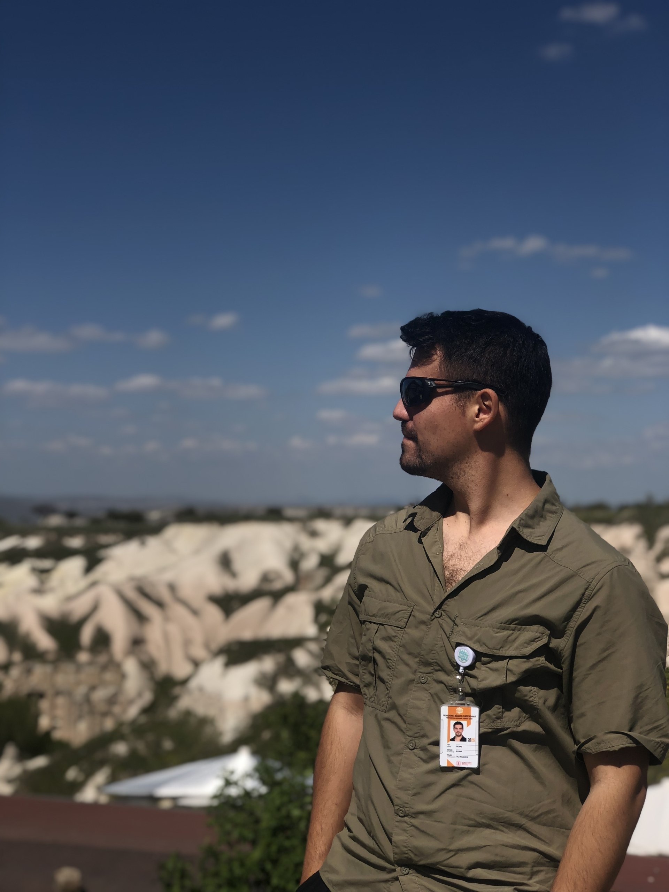

011225
Münferit düzende çeşitli acentalarla iş birliği yaparak yerli ve yabancı misafirlere kapadokya bölgesinde kırmızı ve yeşil turlarda rehberlik yapıyorum.
Rezervasyon, satın alma, muhasebe, misafir ilişkileri alanlarında yönetici pozisyonunda sorumluluk üstlendim.
Yerli ve yabancı misafirlere kapadokya bölgesinde kırmızı ve yeşil turlarda rehberlik yaptım.
Yerli ve yabancı misafirlere kapadokya bölgesinde kırmızı ve yeşil turlarda rehberlik yaptım.
Çeşitli özel okulların öğrencilerine Türkiye genelinde rehberlik yaptım.
Çeşitli acentalarda uluslararası misafir profili ile tarihi yarımada turlarında rehberlik yaptım.
Uluslararası brunch, yemekli davet, düğün seremonisi vb. organizasyonlarda organizatör, tercüman ve rehber görevlerini üstlendim.
Yerli ve yabancı misafirlere kapadokya bölgesinde kırmızı ve yeşil turlarda rehberlik yaptım.
Türkiye genelinde paket turlarda misafir karşılama ve yardımcı rehberlik yaptım.
Muhasebe, Santral, Rezervasyon, Resepsiyon departmanlarında önemli rol üstlendim.
30 Mart 2014 Mahalli İdareler Genel Seçimleri hazırlık sürecinde aktif bir rol oynadım.
• Turizm Rehberliği Bölümü (AGNO: 3.1)
• Adobe Animate Temel Seviye (Haziran 2026) - Belge No: 11868320260098538466
• Google Tools Training - UNICEF (Mart 2023)
• 3D Modelling 101 - Bilgeiş ODTÜ (Mart 2023)
• Temel Elektronik - Bilgeiş ODTÜ (Şubat 2023)
• Afet Ve Acil Durum Farkındalık Eğitimi (Kasım 2026) - Belge No: 11868320260100621101
• Diksiyon Eğitimi Kurs Programı (Temmuz 2026) - Belge No: 11868320260099040935
• İşimiz Temiz Projesi Konaklama Sektöründeki Mikro İşletmeler İçin Hijyen Eğitimi (Mart 2026) - Belge No: 11868320260097303514
• İşimiz Temiz Projesi Yiyecek İçecek Sektöründeki Mikro İşletmeler İçin Hijyen Eğitimi (Mart 2026) - Belge No: 11868320260097359649
• Meslek Etiği (Mart 2026) - Belge No: 11868320260097306170
• Çalışanların Temel İş Sağlığı Ve Güvenliği Eğitimi (Mart 2026) - Belge No: 11868320260097320121
• Profesyonel Bölgesel Turist Rehberi (İngilizce) Ruhsat No: 11225 (Eylül 2019)
• Amatör Balıkçı Belgesi (Ekim 2022)
• Amatör Denizci Belgesi (Eylül 2020)
• Sürücü Belgesi (B Sınıfı) (Temmuz 2020)
• Amatör Telsizcilik Belgesi (TB1TPN) (Kasım 2019)
• Yükseköğretim Kurumları Yabancı Dil Sınavı (İngilizce - 86,25) (Mart 2024)
• Akademik Personel ve Lisansüstü Eğitimi Giriş Sınavı (SÖZ - 75,78) (Mayıs 2021)
• Yabancı Dil Bilgisi Seviye Tespit Sınavı (İngilizce - 80) (Nisan 2018)
- (+90) 553 885 59 95
- berkekorer@gmail.com
- Nevşehir/Türkiye